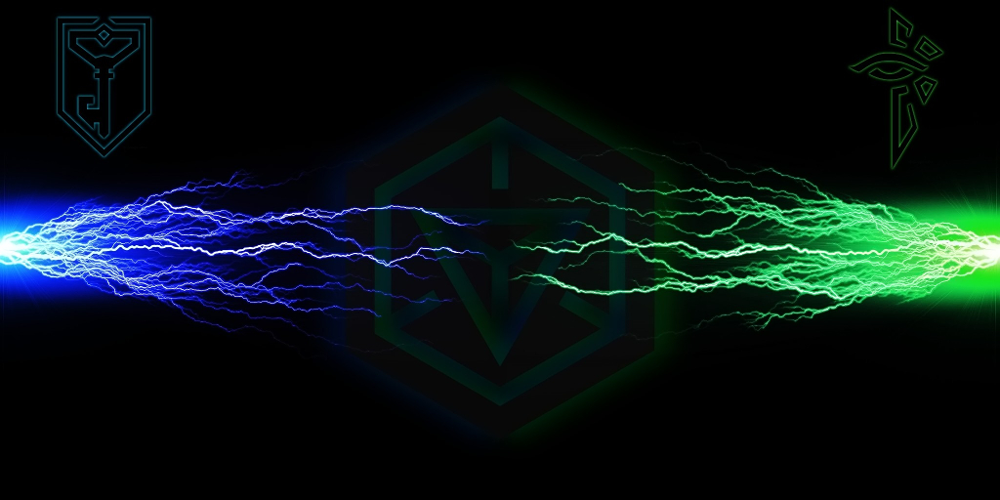
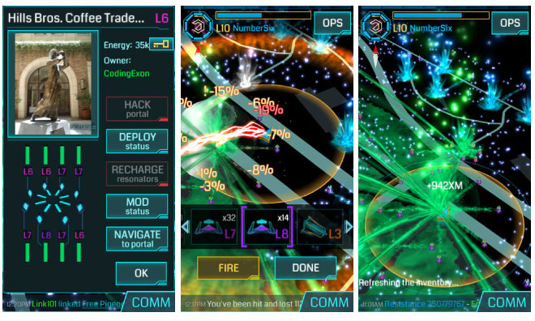

Вступление
Ровно два года наряду с реальным и игровым виртуальным мирами, существует одна из тонких граней, в которой оба эти мира довольно гармонично смешались. Такие грани называют «дополненной» или «расширенной» реальностью (augmented reality), имея в виду, что за видимыми вещами есть нечто гораздо большее. Вот вы установили приложение — и смартфон или планшет в вашей руке превратился в особый девайс — «сканер». Глядя через него на граффити на стене или на городскую скульптуру, вы увидите сочащуюся из них энергию, именуемой «экзоматерией». Возможно, рядом с собой вы увидите (не через девайс, а своими глазами) человека, поглядывающего то в свой смартфон, то на вас. «Синий или зеленый?», думает он. А может, вы обнаружите себя в огромном поле одного из двух цветов, накрывшее весь город… Да, детка, это Ingress.
Выражаясь коротко и красиво, Ingress — это полуреальная MMORPG в мире смартфонов и планшетов. Она появилась как сплав городских квестов, детских командных соревнований вроде «казаков-разбойников», теории мирового заговора, фантастических антиутопий и азартных игр. Она прижилась, став целой культурой, разделив жителей земного шара на две фракции, но одновременно и сплотив их ради одной цели — бесконечно играть и сражаться. Смело и не без преувеличения можно сказать, что Ingress — это больше, чем игра. Это самый настоящий стиль жизни.
Сюжет
Представьте себе, что при запуске эксперимента CERN на Большом Адронном Коллайдере случилось то, чего не ждали —
освободилась некая межпространственная энергия, которую тут же окрестили Exotic Matter, по-нашему —
экзоматерия или «ЭксЭм». Эта энергия стала скапливаться, как оказалось,
в местах проявления искусства или науки, т.е. свидетельствах развития человечества: памятниках, музеях, библиотеках,
даже в почтовых отделениях. Такие скопления XM стали называть «порталами«. И не просто так — оказалось,
что порталы позволяют проходить в наш мир представителям инопланетной расы — Шейперам. Говорят, что именно
Шейперы влияли на развитие человечества: они управляли разумом таких выдающихся людей, как Менделеев или Моцарт
(не зря, им многие идеи приходили «во сне»), они двигали прогресс всё дальше, преследуя только им одну известную цель.
Теперь же Шейперы решили, что мир готов встать на новый уровень. Но у людей свое мнение на этот счет, а точнее даже два.
Сопротивление (Resistance), фракция «Синих» — убеждены, что Шейперы превратят людей в развитых, но не имеющих индивидуального сознания, существ. Они считают, что цель инопланетян — создать себе армию людей с коллективным разумом, подобно муравьям. Агенты Сопротивления уверены, что человечество само справится со своим прогрессом и искусством.
Просвещенные (Enlightened), фракция «Зеленых» — верят, что Шейперы должны и дальше двигать прогресс человечества, поэтому помогают им. Есть много аргументов того, что люди всегда боятся нового, но оно приносит благо. Разве не инопланетяне помогли самым древним людям строить пирамиды или первые обсерватории? А может, Шейперы вообще создали людей?..

Геймплей
На самом деле геймплей у обоих фракций не отличается ничем.
Выглядит все примерно так:
1. Нужно успевать к определенным временным чекпоинтам зарабатывать больше очков, чем вражеская фракция.
2. Чтобы зарабатывать очки, нужно создавать поля, соединяя три портала одного цвета (выбранной вами фракции).
3. Чтобы соединять порталы, нужно их правильно захватывать.
Это не так сложно, как кажется на первый взгляд. Когда вы установите Ingress, вас встретит навязчивый туториал,
который обучит вас самым базовым вещам. После этого неплохо обзавестись опытным другом. Если у вас его нет, вы
всегда можете написать в игровой чат (COMM) — он у вас в интерфейсе в правом нижнем углу. Выберите самое ближнее
расстояние игроков от вас и маякуйте — «Я новенький, ребята!». Но базовые действия вы поймете даже из текта ниже.
По поводу интерфейса: для начала вам нужно знать, что шкала XM в данной игре — это и здоровье, и энергия.
То есть, она будет тратиться при совершении действий, описанных ниже, а также будет уменьшаться, когда вражеские
порталы будут наносить вам урон (при взломе или вашей на них атаке). Если шкала полностью пропадет — по экрану
сканнера побежит красная рябь и сканер будет «отключен». Но не пугайтесь! ХМ можно собирать прямо на улице —
вы увидите, что вокруг вас множество серебристых капелек — это вот она и есть. Кроме того, пополнять ХМ можно
энергетическими кубами или «употребляя» ненужные предметы инвентаря. Хотя стойте — в начале игры они все нужные!

Основные геймлейные действия:
Взлом портала (hack, «хакнуть») — осуществляется по отношению к порталу любой фракции, и даже нейтральным, т.е. — не захваченным. Единственная цель «хака» — «фарм» предметов. Чтобы «хакнуть» портал, вам надо находиться в диапазоне сканера, отмеченном желтым кругом. Когда вы хакаете чужой портал, то за это еще и получаете +100 XP. Чем выше уровень портала, тем выше уровень и предметов, которые можно из него получить, но они не будут выпадать выше, чем ваш уровень + еще один сверху. У порталов есть кулдаун — это обычно 5 минут, если на него не установлены специальные предметы (про такие предметы, МОДы, сможете почитать позже вот тут). За это время портал «остывает» и взлом его невозможен. Важный лайфхак! Если не просто тапнуть, но зажать кнопку hack, то откроется мини-игра на запоминание глифов. В зависимости от уровня порталов, вам будет предложено повторить от одного до пяти глифов, за которыми могут скрываться таинственные сообщения — вероятно, от самих от Шейперов. Правильно повторенные глифы добавляют вам бонусные предметы!
Установка резонаторов, деплой портала (deploy) — чтобы портал функционировал на полную силу, на нем должно быть установлено 8 резонаторов. Резонаторы — это просто такие вот штуковины, без полного количества которых портал нельзя соединять с другими порталами. Деплоить, естественно, можно только нейтральный портал (это называется захватом портала), или же добавлять резонаторы своему, в котором их меньше 8. Резонаторов 1-го уровня одному человеку можно поставить все 8 на портал, 2-го , 3-го и 4-го — по четыре штуки, 5-го и 6-го по 2, а вот самые крутые «резы» — 7 и 8, один игрок может поставить только по одной штуке. Это сделано потому, что Ingress — командная игра. Первый и последний резонаторы дают наибольшее количество XP. Если вы пошли качаться с другом, а у вас не так много резонаторов в инвентаре, то просите его давать вам ставить первый и последний (если только ему самом не надо качаться — будьте толерантны! :))Важный лайфхак! — деплоить портал желательно на максимально дальнем расстоянии. Чем дальше вы находитесь от портала, тем дальше установятся ваши резонаторы, и тем сложнее противнику будет их взрывать (об этом дальше). Деплоя портал, встаньте так, чтобы он находился у самого края вашего желтого круга. Вы также можете заменять слабые резонаторы более сильными, т.е. более высокого уровня.
Линк, соединение порталов (link) — основная цель игры не в захвате порталов, а в соединении их в заполненные треугольники (control field). Чтобы соединять между собой два портала, нужно стоять на досягаемом расстоянии у одного портала и иметь ключ от того, с которым вы хотите его соединить. Ключи порталов выпадают при их взломе приблизительно с 80% вероятностью. Кнопку link вы увидите в профиле портала, в центре схемы резонаторов. Естественно, что активной она становится только тогда, когда их установлено все 8 штук. Игра может предложить вам залинковать все досягаемые порталы, от которых у вас есть ключи, но линкуйте с умом. Линк не должен пересекать другие линки, потому не стоит соединять два портала через весь город, если не планируете завершить постройку поля. Иначе вы испортите игру другим (это еще называют «говнолинком»). Обычно, если у вас есть ключ от портала, допустим, «Фонтанчик солнышко», то хакая этот фонтанчик во второй раз, ключ уже не выпадет. Но если вы хотите залинковать два находящихся возле вас портала к «Фонтанчику», и тем самым создать поле, то есть очередной лайфхак: стоя возле фонтанчика, выбросите ключ (кнопка Drop в окне ключа), хакните портал еще раз, и когда вам выпадет второй ключ, подберите тот, что выбросили. Вуаля! Теперь вы сможете прилинковать 2 портала к «Фонтанчику солнышко» не бегая туда-сюда! Вы восхитительны!
Перезарядка резонаторов (речадж, recharge) — нужна для поддержания жизнедеятельности резонаторов, а следовательно — порталов. Резонаторы потребляют ровно 25% заряда в сутки, кроме того, их заряд разрушают атаки врагов. Заряжать можно как пачку резонаторов, так и каждый по отдельности — естественно, что на это вы тратите XM из своей шкалы «здоровья». Это даже дает немного опыта, так нужного новичкам. Чтобы перезарядить портал, нужно встать в его радиусе, но можно речарджить и порталы на расстоянии, если у вас есть ключи от них. Правда, чем дальше от вас цель — тем больше будет расход XM. Ну и напоследок — самое веселое.
Атака вражеских порталов! Не советую, конечно, бить порталы на первых уровнях — разве что в компании с сильными игроками, то есть добивать вражеские резонаторы для получения опыта. Тут все просто — чем выше ваш уровень, тем выше уровень бомб, которые вы можете использовать (Xmp Burster, в простонародье «бустеры»). Просто заходите в инвентарь, выбираете «бустер» и нажимаете Fire. А теперь очень важный лайфхак: на экране, где вы видите порталы, а внизу прокрутку бустеров в вашем инвентаре, зажмите кнопку Fire. Вы увидите, что экзоматерия бурлит вокруг вас, сужая и расширяя кольцо. Так вот, когда оно максимально сузилось — отпускайте кнопку. Это дает возможность увеличить силу атаки бустера до +20%.
Посмотреть все актуальные мировые порталы, линковки и поля можно на этом сайте
Немного терминологии и жаргона русскоязычного Ингресса:
Ферма — большая группа порталов в одном месте. Называется так потому, что туда ходят хакать и собирать предметы. Самые ценные, естественно, «восьмые фермы» — там самые мощные порталы.
Рез — резонатор.
Буст, бустер — Xmp Burster . «Вадик, идешь в рейд? Нет? Ну хоть бустов в окошко брось».
Упорин — настроение играть в Ингресс, например, до 3:00 ночи или сорваться и поехать в другой город линковать.
Домашние, домашки, диваны — порталы, до которых можно дотянуться из дома.
Апнуть — поднять уровень портала посредством доставления на него высоких резонаторов. «Восьмерки, апните мне домашние, если будете идти мимо».
Флипнуть — перекрасить портал посредством вируса (об этом читайте в другой раз!)
Говнолинк — непродуманная линковка, которая портит последующую тактическую игру. #ялинкуюкакдурак
Жабы — пренебрежительное название энлайтов резистами. Синька — пренебрежительное название резистов энлайтами.